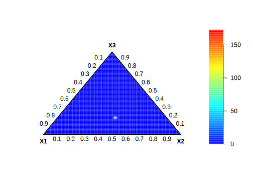

3.2 Conjugate prior to exponential family
Theorem 4.2.1
The prior distribution \(\pi(\boldsymbol{\theta})\propto C(\boldsymbol{\theta})^{b_0}\exp\left\{\eta(\boldsymbol{\theta})^{\top}\boldsymbol{a}_0\right\}\) is conjugate to the exponential family (equation (3.4)).
Proof
\[\begin{align} \pi(\boldsymbol{\theta}\mid \boldsymbol{y})& \propto C(\boldsymbol{\theta})^{b_0}\exp\left\{\eta(\boldsymbol{\theta})^{\top}\boldsymbol{a}_0\right\} \times h(\boldsymbol{y}) C(\boldsymbol{\theta})^N\exp\left\{\eta(\boldsymbol{\theta})^{\top}\boldsymbol{T}(\boldsymbol{y})\right\}\nonumber\\ & \propto C(\boldsymbol{\theta})^{N+b_0} \exp\left\{\eta(\boldsymbol{\theta})^{\top}(\boldsymbol{T}(\boldsymbol{y})+\boldsymbol{a}_0)\right\}.\nonumber \end{align}\]
Observe that the posterior is in the exponential family, \(\pi(\boldsymbol{\theta}\mid \boldsymbol{y})\propto C(\boldsymbol{\theta})^{\beta_n} \exp\left\{\eta(\boldsymbol{\theta})^{\top}\boldsymbol{\alpha}_n\right\}\), \(\beta_n=N+b_0\) and \(\boldsymbol{\alpha}_n=\boldsymbol{T}(\boldsymbol{y})+\boldsymbol{a}_0\).
Remarks
We observe, by comparing the prior and the likelihood, that \(b_0\) plays the role of a hypothetical sample size, and \(\boldsymbol{a}_0\) plays the role of hypothetical sufficient statistics. This perspective aids the elicitation process, that is, integrating non-sample information into the prior distribution.
We established this result in the standard form of the exponential family. We can also establish it in the canonical form of the exponential family. Observe that, given \(\boldsymbol{\eta} = \boldsymbol{\eta}(\boldsymbol{\theta})\), another way to derive a prior for \(\boldsymbol{\eta}\) is to use the change of variable theorem, given a bijective function.
In the case where there is a regular conjugate prior, Diaconis, Ylvisaker, et al. (1979) show that the posterior expectation of the sufficient statistics is a weighted average between the prior expectation and the likelihood estimate.
3.2.1 Examples: Theorem 4.2.1
- Likelihood functions from discrete distributions
The Poisson-gamma model
Given a random sample \(\boldsymbol{Y}=[Y_1 \ Y_2 \ \dots \ Y_N]^{\top}\) from a Poisson distribution then a conjugate prior density for \(\lambda\) has the form \[\begin{align} \pi(\lambda)&\propto \left(\exp(-\lambda)\right)^{b_0} \exp\left\{a_0\log(\lambda)\right\}\nonumber\\ & = \exp(-\lambda b_0) \lambda^{a_0}\nonumber\\ & = \exp(-\lambda \beta_0) \lambda^{\alpha_0-1}.\nonumber \end{align}\] This is the kernel of a gamma density in the rate parametrization, \(G(\alpha_0, \beta_0)\), where \(\alpha_0 = a_0 + 1\) and \(\beta_0 = b_0\).1 Thus, a prior conjugate distribution for the Poisson likelihood is a gamma distribution.
Since \(\sum_{i=1}^N Y_i\) is a sufficient statistic for the Poisson distribution, we can interpret \(a_0\) as the number of occurrences in \(b_0\) experiments.
Observe that \[\begin{align} \pi(\lambda\mid \boldsymbol{y})&\propto \exp(-\lambda \beta_0) \lambda^{\alpha_0-1} \times \exp(-N\lambda)\lambda^{\sum_{i=1}^Ny_i}\nonumber\\ &= \exp(-\lambda(N+\beta_0)) \lambda^{\sum_{i=1}^Ny_i+\alpha_0-1}.\nonumber \end{align}\] As expected, this is the kernel of a gamma distribution, which means \(\lambda\mid \boldsymbol{y}\sim G(\alpha_n,\beta_n)\), \(\alpha_n=\sum_{i=1}^Ny_i+\alpha_0\) and \(\beta_n=N+\beta_0\).
Observe that \(\alpha_0/\beta_0\) is the prior mean, and \(\alpha_0/\beta_0^2\) is the prior variance. Then, \(\alpha_0\rightarrow 0\) and \(\beta_0\rightarrow 0\) imply a non-informative prior such that the posterior mean converges to the maximum likelihood estimate \(\bar{y}=\frac{\sum_{i=1}^N y_i}{N}\), \[\begin{align} \mathbb{E}\left[\lambda\mid \boldsymbol{y}\right]&=\frac{\alpha_n}{\beta_n}\nonumber\\ &=\frac{\sum_{i=1}^Ny_i+\alpha_0}{N+\beta_0}\nonumber\\ &=\frac{N\bar{y}}{N+\beta_0}+\frac{\alpha_0}{N+\beta_0}.\nonumber \end{align}\] The posterior mean is a weighted average of the sample and prior information. This is a general result for regular conjugate priors (Diaconis, Ylvisaker, et al. 1979). Note that \(\lim_{N \to \infty} \mathbb{E}[\lambda \mid \boldsymbol{y}] = \bar{y}\).
Additionally, \(\alpha_0 \to 0\) and \(\beta_0 \to 0\) corresponds to \(\pi(\lambda) \propto \frac{1}{\lambda}\), which is an improper prior. Improper priors may have undesirable consequences for Bayes factors (hypothesis testing); see below for a discussion of this in the linear regression framework. In this example, we can obtain analytical solutions for the marginal likelihood and the predictive distribution (see the health insurance example and Exercise 3 in Chapter 1).
The Bernoulli-beta model
Given a random sample \(\boldsymbol{Y}=[Y_1 \ Y_2 \ \dots \ Y_N]^{\top}\) from a Bernoulli distribution then a conjugate prior density for \(\theta\) has the form \[\begin{align} \pi(\theta)&\propto (1-\theta)^{b_0} \exp\left\{a_0\log\left(\frac{\theta}{1-\theta}\right)\right\}\nonumber\\ & = (1-\theta)^{b_0-a_0}\theta^{a_0}\nonumber\\ & = \theta^{\alpha_0-1}(1-\theta)^{\beta_0-1}.\nonumber \end{align}\] This is the kernel of a beta density, \(B(\alpha_0, \beta_0)\), where \(\alpha_0 = a_0 + 1\) and \(\beta_0 = b_0 - a_0 + 1\). A prior conjugate distribution for the Bernoulli likelihood is a beta distribution. Given that \(b_0\) is the hypothetical sample size and \(a_0\) is the hypothetical sufficient statistic (the number of successes), \(b_0 - a_0\) represents the number of failures. This implies that \(\alpha_0\) is the number of prior successes plus one, and \(\beta_0\) is the number of prior failures plus one.
Since the mode of a beta-distributed random variable is given by \(\frac{\alpha_0 - 1}{\alpha_0 + \beta_0 - 2} = \frac{a_0}{b_0}\), we can interpret this as the prior probability of success. Setting \(\alpha_0 = 1\) and \(\beta_0 = 1\), which corresponds to a uniform distribution on the interval [0, 1], represents a setting with 0 successes (and 0 failures) in 0 experiments.
Observe that \[\begin{align} \pi(\theta\mid \boldsymbol{y})&\propto \theta^{\alpha_0-1}(1-\theta)^{\beta_0-1} \times \theta^{\sum_{i=1}^N y_i}(1-\theta)^{N-\sum_{i=1}^Ny_i}\nonumber\\ &= \theta^{\alpha_0+\sum_{i=1}^N y_i-1}(1-\theta)^{\beta_0+N-\sum_{i=1}^Ny_i-1}.\nonumber \end{align}\] The posterior distribution is beta, \(\theta\mid \boldsymbol{y}\sim B(\alpha_n,\beta_n)\), \(\alpha_n=\alpha_0+\sum_{i=1}^N y_i\) and \(\beta_n=\beta_0+N-\sum_{i=1}^Ny_i\), where the posterior mean \(\mathbb{E}[\theta\mid \boldsymbol{y}]=\frac{\alpha_n}{\alpha_n+\beta_n}=\frac{\alpha_0+N\bar{y}}{\alpha_0+\beta_0+N}=\frac{\alpha_0+\beta_0}{\alpha_0+\beta_0+N}\frac{\alpha_0}{\alpha_0+\beta_0}+\frac{N}{\alpha_0+\beta_0+N}\bar{y}\). The posterior mean is a weighted average between the prior mean and the maximum likelihood estimate.
El marginal likelihood in this setting is \[\begin{align} p(\boldsymbol{y})=&\int_{0}^1 \frac{\theta^{\alpha_0-1}(1-\theta)^{\beta_0-1}}{B(\alpha_0,\beta_0)}\times \theta^{\sum_{i=1}^N y_i}(1-\theta)^{N-\sum_{i=1}^N y_i}d\theta\nonumber\\ =& \frac{B(\alpha_n,\beta_n)}{B(\alpha_0,\beta_0)},\nonumber \end{align}\] where \(B(\cdot ,\cdot)\) is the beta function.
In addition, the predictive density is \[\begin{align} p(y_0\mid \boldsymbol{y})&=\int_0^1 \theta^{y_0}(1-\theta)^{1-y_0}\times \frac{\theta^{\alpha_n-1}(1-\theta)^{\beta_n-1}}{B(\alpha_n,\beta_n)}d\theta\nonumber\\ &=\frac{B(\alpha_n+y_0,\beta_n+1-y_0)}{B(\alpha_n,\beta_n)}\nonumber\\ &=\frac{\Gamma(\alpha_n+\beta_n)\Gamma(\alpha_n+y_0)\Gamma(\beta_n+1-y_0)}{\Gamma(\alpha_n+\beta_n+1)\Gamma(\alpha_n)\Gamma(\beta_n)}\nonumber\\ &=\begin{Bmatrix} \frac{\alpha_n}{\alpha_n+\beta_n}, & y_0=1\\ \frac{\beta_n}{\alpha_n+\beta_n}, & y_0=0\\ \end{Bmatrix}.\nonumber \end{align}\]
This is a Bernoulli distribution with probability of success equal to \(\frac{\alpha_n}{\alpha_n+\beta_n}\).
The multinomial-Dirichlet model
Given a random sample \(\boldsymbol{Y}=[Y_1 \ Y_2 \ \dots \ Y_N]^{\top}\) from a multinomial distribution then a conjugate prior density for \(\boldsymbol{\theta}=\left[\theta_1 \ \theta_2 \ \dots \ \theta_m\right]\) has the form \[\begin{align} \pi(\boldsymbol{\theta})&\propto \theta_m^{b_0} \exp\left\{\boldsymbol{\eta}(\boldsymbol{\theta})^{\top}\boldsymbol{a}_0\right\}\nonumber\\ & = \prod_{l=1}^{m-1}\theta_l^{a_{0l}}\theta_m^{b_0-\sum_{l=1}^{m-1}a_{0l}}\nonumber\\ & = \prod_{l=1}^{m}\theta_l^{\alpha_{0l}-1},\nonumber \end{align}\]
where \(\boldsymbol{\eta}(\boldsymbol{\theta})=\left[\log\left(\frac{\theta_1}{\theta_m}\right) \ \dots \ \log\left(\frac{\theta_{m-1}}{\theta_m}\right)\right]\), \(\boldsymbol{a}_0=\left[a_{01} \ \dots \ a_{0m-1}\right]^{\top}\), \(\boldsymbol{\alpha}_0=\left[\alpha_{01} \ \alpha_{02} \ \dots \ \alpha_{0m}\right]\), \(\alpha_{0l}=a_{0l}+1\), \(l=1,2,\dots,m-1\) and \(\alpha_{0m}=b_0-\sum_{l=1}^{m-1} a_{0l}+1\).
This is the kernel of a Dirichlet distribution, that is, the prior distribution is \(D(\boldsymbol{\alpha}_0)\).
Observe that \(a_{0l}\) is the hypothetical number of times outcome \(l\) is observed over the hypothetical \(b_0\) trials. Setting \(\alpha_{0l} = 1\), which corresponds to a uniform distribution over the open standard simplex, implicitly sets \(a_{0l} = 0\), meaning that there are 0 occurrences of category \(l\) in \(b_0 = 0\) experiments.
The posterior distribution of the multinomial-Dirichlet model is given by \[\begin{align} \pi(\boldsymbol{\theta}\mid \boldsymbol{y})&\propto \prod_{l=1}^m \theta_l^{\alpha_{0l}-1}\times\prod_{l=1}^m \theta_l^{\sum_{i=1}^{N} y_{il}}\nonumber\\ &=\prod_{l=1}^m \theta_l^{\alpha_{0l}+\sum_{i=1}^{N} y_{il}-1}\nonumber. \end{align}\] This is the kernel of a Dirichlet distribution \(D(\boldsymbol{\alpha}_n)\), \(\boldsymbol{\alpha}_n=\left[\alpha_{n1} \ \alpha_{n2} \ \dots \ \alpha_{nm}\right]\), \(\alpha_{nl}=\alpha_{0l}+\sum_{i=1}^{N}y_{il}\), \(l=1,2,\dots,m\). Observe that \[\begin{align} \mathbb{E}[\theta_{j}\mid \boldsymbol{y}]&=\frac{\alpha_{nj}}{\sum_{l=1}^m \left[\alpha_{0l}+\sum_{i=1}^N y_{il}\right]}\nonumber\\ &=\frac{\sum_{l=1}^m \alpha_{0l}}{\sum_{l=1}^m \left[\alpha_{0l}+\sum_{i=1}^N y_{il}\right]}\frac{\alpha_{0j}}{\sum_{l=1}^m \alpha_{0l}}\nonumber\\ &+\frac{\sum_{l=1}^m\sum_{i=1}^N y_{il}}{\sum_{l=1}^m \left[\alpha_{0l}+\sum_{i=1}^N y_{il}\right]}\frac{\sum_{i=1}^N y_{ij}}{\sum_{l=1}^m\sum_{i=1}^N y_{il}}.\nonumber \end{align}\] We have again that the posterior mean is a weighted average between the prior mean and the maximum likelihood estimate.
The marginal likelihood is \[\begin{align} p(\boldsymbol{y})&=\int_{\boldsymbol{\Theta}}\frac{\prod_{l=1}^m \theta_l^{\alpha_{0l}-1}}{B(\boldsymbol{\alpha}_0)}\times \prod_{i=1}^N\frac{n!}{\prod_{l=1}^m y_{il}!}\prod_{l=1}^m \theta_{l}^{y_{il}}d\boldsymbol{\theta}\nonumber\\ &=\frac{N\times n!}{B(\boldsymbol{\alpha}_0)\prod_{i=1}^N\prod_{l=1}^m y_{il}!}\int_{\boldsymbol{\Theta}} \prod_{l=1}^m \theta_l^{\alpha_{0l}+\sum_{i=1}^N y_{il}-1} d\boldsymbol{\theta}\nonumber\\ &=\frac{N\times n!}{B(\boldsymbol{\alpha}_0)\prod_{i=1}^N\prod_{l=1}^m y_{il}!}B(\boldsymbol{\alpha}_n)\nonumber\\ &=\frac{N\times n! \Gamma\left(\sum_{l=1}^m\nonumber \alpha_{0l}\right)}{\Gamma\left(\sum_{l=1}^m \alpha_{0l}+N\times n\right)}\prod_{l=1}^m \frac{\Gamma\left( \alpha_{nl}\right)}{\Gamma\left(\alpha_{0l}\right)\prod_{i=1}^N y_{il}!},\nonumber \end{align}\] where \(B(\boldsymbol{\alpha})=\frac{\prod_{l=1}^m\Gamma(\alpha_l)}{\Gamma\left(\sum_{l=1}^m \alpha_l\right)}\).
Following similar steps we get the predictive density \[\begin{align} p(y_0\mid \boldsymbol{y})&=\frac{ n! \Gamma\left(\sum_{l=1}^m \alpha_{nl}\right)}{\Gamma\left(\sum_{l=1}^m \alpha_{nl}+ n\right)}\prod_{l=1}^m \frac{\Gamma\left( \alpha_{nl}+y_{0l}\right)}{\Gamma\left(\alpha_{nl}\right) y_{0l}!}.\nonumber \end{align}\] This is a Dirichlet-multinomial distribution with parameters \(\boldsymbol{\alpha}_n\).
Example: English premier league, Liverpool vs Manchester city
Let’s consider an example using data from the English Premier League. In particular, we want to calculate the probability that, in the next five matches between Liverpool and Manchester City, Liverpool wins two games and Manchester City wins three. This calculation is based on historical data from the last five matches where Liverpool played at home between January 14th, 2018, and April 10th, 2022. In those matches, Liverpool secured two wins, there were two draws, and Manchester City won one match. 2
We use two strategies to estimate the hyperparameters. First, we estimate the hyperparameters of the Dirichlet distribution using betting odds from bookmakers at 19:05 on October 6th, 2022 (Colombia time). We obtained data from 24 bookmakers (see file DataOddsLIVvsMAN.csv)3, and we transform these odds into probabilities using a simple standardization approach. Then, we apply maximum likelihood estimation to estimate the hyperparameters.
Second, we use empirical Bayes, where we estimate the hyperparameters by optimizing the marginal likelihood.
########### Dirichlet-Multinomial model: Liverpool vs Manchester City ##############
# Clear workspace and set reproducible seed
rm(list = ls())
set.seed(10101)
########################## Multinomial-Dirichlet example: Liverpool vs Manchester City ##########################
# Load required libraries
library(dplyr)##
## Attaching package: 'dplyr'## The following objects are masked from 'package:stats':
##
## filter, lag## The following objects are masked from 'package:base':
##
## intersect, setdiff, setequal, union## - sirt 4.1-15 (2024-02-06 00:05:40)## Loading required package: coda## Loading required package: MASS##
## Attaching package: 'MASS'## The following object is masked from 'package:dplyr':
##
## select## ##
## ## Markov Chain Monte Carlo Package (MCMCpack)## ## Copyright (C) 2003-2025 Andrew D. Martin, Kevin M. Quinn, and Jong Hee Park## ##
## ## Support provided by the U.S. National Science Foundation## ## (Grants SES-0350646 and SES-0350613)
## ####
## Compositional: 7.3## _ _ _ _
## / _ _ _\
## / /
## | | _ _ _ _ _ _ _ _ _ _ _ _ _ _ _ _ _ _ _ _ _ _ _ _ _ _ _ _ _ _ _ _ _ _
## | | | _ _ | / \ / \ | _ _ | | _ _ | | _ _ _/ |_| _| |_ |_| | _ _ | / _ _ \ / _ _ \ | |
## | | | | | | | \/ | | | | | | | | | |_ _ _ | _ |_ _| _ | | | | | | | | | | | | | |
## \ \ _ _ _ | |_ _| | | |\__/| | | |_ _| | | |_ _| | _ _ _| | | | | |_ | | | |_ _| | | | | | | |_ _| \_ | |
## \_ _ _ _ / |_ _ _ _| |_| |_| | _ _ _| |_ _ _ _| /_ _ _ _| |_| |_ _\ |_| |_ _ _ _| |_| |_| \_ _ _ _ _/ |_|
## | |
## |_|##
## Attaching package: 'Compositional'## The following object is masked from 'package:sirt':
##
## pow# Load data
data <- read_csv(
"https://raw.githubusercontent.com/besmarter/BSTApp/refs/heads/master/DataApp/DataOddsLIVvsMAN.csv",
show_col_types = FALSE
)
# Match and odds info:
# - Odds collected: 2022-10-06 19:00 (Colombia time)
# - Match played: 2022-10-16
# Source: https://www.oddsportal.com/soccer/england/premier-league/liverpool-manchester-city-WrqgEz5S/
# Compute implied probabilities from odds
probs <- data %>%
mutate(
pns1 = 1 / home,
pns2 = 1 / draw,
pns3 = 1 / away,
sum_inv_odds = pns1 + pns2 + pns3,
p1 = pns1 / sum_inv_odds,
p2 = pns2 / sum_inv_odds,
p3 = pns3 / sum_inv_odds
) %>%
dplyr::select(p1, p2, p3)
# Estimate Dirichlet parameters from betting odds
dir_mle <- dirichlet.mle(probs)
alpha0_odds <- dir_mle$alpha
print(alpha0_odds)## p1 p2 p3
## 1599.122 1342.703 2483.129# Historical results: 2 wins Liverpool, 2 draws, 1 win Man City
# Source: https://www.11v11.com/teams/manchester-city/tab/opposingTeams/opposition/Liverpool/
y <- c(2, 2, 1)
# Marginal log-likelihood function (negative for optimization)
marginal_likelihood <- function(alpha) {
n <- sum(y)
res1 <- sum(sapply(seq_along(y), function(i) {
lgamma(alpha[i] + y[i]) - lgamma(alpha[i])
}))
res <- lgamma(sum(alpha)) - lgamma(sum(alpha) + n) + res1
return(-res)
}
# Empirical Bayes estimate using MLE
emp_bayes <- optim(alpha0_odds, marginal_likelihood, method = "BFGS", control = list(maxit = 10000))
alpha0_eb <- emp_bayes$par
print(alpha0_eb)## p1 p2 p3
## 2362.622 2660.153 1279.510## p1 p2 p3
## 1599.122 1342.703 2483.129# Bayes factor: empirical Bayes vs odds-based prior
bf <- exp(-marginal_likelihood(alpha0_eb)) / exp(-marginal_likelihood(alpha0_odds))
print(bf)## [1] 2.085819# Posterior parameters (empirical Bayes prior + data)
alpha_n <- alpha0_eb + y
# Draw posterior samples
set.seed(10101)
S <- 100000
thetas <- rdirichlet(S, alpha_n)
colnames(thetas) <- c("Liverpool", "Draw", "Manchester")
head(thetas)## Liverpool Draw Manchester
## [1,] 0.3678062 0.4293378 0.2028560
## [2,] 0.3691963 0.4309123 0.1998915
## [3,] 0.3730995 0.4154875 0.2114129
## [4,] 0.3795829 0.4230345 0.1973826
## [5,] 0.3738765 0.4209246 0.2051989
## [6,] 0.3770364 0.4208721 0.2020915
# Predictive distribution for hypothetical outcome
y0 <- c(2, 0, 3)
pred_draws <- apply(thetas, 1, function(p) {
rmultinom(1, size = sum(y0), prob = p)
})
prob_y0_sim <- mean(apply(pred_draws, 2, function(draw) all(draw == y0)))
print(prob_y0_sim)## [1] 0.01202# Predictive probability using closed-form expression
predictive_prob_y0 <- function(y0) {
n <- sum(y0)
res1 <- sum(sapply(seq_along(y), function(i) {
lgamma(alpha_n[i] + y0[i]) - lgamma(alpha_n[i]) - lfactorial(y0[i])
}))
res <- lfactorial(n) + lgamma(sum(alpha_n)) - lgamma(sum(alpha_n) + n) + res1
return(exp(res))
}
predictive_prob_y0(y0)## [1] 0.01177531We observe that the Bayes factor provides evidence in favor of the hyperparameters estimated via empirical Bayes, as these hyperparameters are specifically chosen to maximize the marginal likelihood.
Using the hyperparameters obtained from empirical Bayes, we calculate that the probability of Liverpool winning two out of the next five games, while Manchester City wins three, is 1.2%. The result obtained from the predictive distribution via simulations is similar to the probability derived using the exact predictive distribution.
- Likelihood functions from continuous distributions
The normal-normal/inverse-gamma model
Given a random sample \(\boldsymbol{Y}=[Y_1 \ Y_2 \ \dots \ Y_N]^{\top}\) from a normal distribution, then the conjugate prior density has the form \[\begin{align} \pi(\mu,\sigma^2)&\propto \exp\left\{b_0\left(-\frac{\mu^2}{2\sigma^2}-\frac{\log \sigma^2}{2}\right)\right\}\exp\left\{a_{01}\frac{\mu}{\sigma^2}-a_{02}\frac{1}{\sigma^2}\right\}\nonumber\\ &=\exp\left\{b_0\left(-\frac{\mu^2}{2\sigma^2}-\frac{\log \sigma^2}{2}\right)\right\}\exp\left\{a_{01}\frac{\mu}{\sigma^2}-a_{02}\frac{1}{\sigma^2}\right\}\nonumber\\ &\times \exp\left\{-\frac{a_{01}^2}{2\sigma^2b_0}\right\}\exp\left\{\frac{a_{01}^2}{2\sigma^2b_0}\right\}\nonumber\\ &=\exp\left\{-\frac{b_0}{2\sigma^2}\left(\mu-\frac{a_{01}}{b_0}\right)^2\right\}\left(\frac{1}{\sigma^2}\right)^{\frac{b_0+1-1}{2}}\nonumber\\ &\times \exp\left\{\frac{1}{\sigma^2}\frac{-2b_0a_{02}+a_{01}^2}{2b_0}\right\}\nonumber\\ &=\underbrace{\left(\frac{1}{\sigma^2}\right)^{\frac{1}{2}}\exp\left\{-\frac{b_0}{2\sigma^2}\left(\mu-\frac{a_{01}}{b_0}\right)^2\right\}}_{1}\nonumber\\ &\times\underbrace{\left(\frac{1}{\sigma^2}\right)^{\frac{b_0-1}{2}}\exp\left\{-\frac{1}{\sigma^2}\frac{2b_0a_{02}-a_{01}^2}{2b_0}\right\}}_{2}.\nonumber \end{align}\] The first part is the kernel of a normal density with mean \(\mu_0 = \frac{a_{01}}{\beta_0}\) and variance \(\frac{\sigma^2}{\beta_0}\), where \(\beta_0 = b_0\). That is, \(\mu \mid \sigma^2 \sim N\left(\mu_0, \frac{\sigma^2}{\beta_0}\right)\). The second part is the kernel of an inverse gamma density with shape parameter \(\frac{\alpha_0}{2} = \frac{\beta_0 - 3}{2}\) and scale parameter \(\frac{\delta_0}{2} = \frac{2\beta_0 a_{02} - a_{01}^2}{2\beta_0}\), so \(\sigma^2 \sim IG\left(\frac{\alpha_0}{2}, \frac{\delta_0}{2}\right)\).
Observe that \(b_0 = \beta_0\) represents the hypothetical sample size, and \(a_{01}\) is the hypothetical sum of prior observations. Therefore, it makes sense that \(\frac{a_{01}}{\beta_0}\) and \(\frac{\sigma^2}{\beta_0}\) represent the prior mean and variance, respectively.
Therefore, the posterior distribution is also a normal-inverse gamma distribution, \[\begin{align} \pi(\mu,\sigma^2\mid \boldsymbol{y})&\propto \left(\frac{1}{\sigma^2}\right)^{1/2}\exp\left\{-\frac{\beta_0}{2\sigma^2}(\mu-\mu_0)^2\right\}\left(\frac{1}{\sigma^2}\right)^{\alpha_0/2+1}\exp\left\{-\frac{\delta_0}{2\sigma^2}\right\}\nonumber\\ &\times(\sigma^2)^{-N/2}\exp\left\{-\frac{1}{2\sigma^2}\sum_{i=1}^N (y_i-\mu)^2\right\}\nonumber\\ & = \left(\frac{1}{\sigma^2}\right)^{1/2}\exp\left\{-\frac{1}{2\sigma^2}\left(\beta_0(\mu-\mu_0)^2+\sum_{i=1}^N (y_i-\bar{y})^2+N(\mu-\bar{y})^2+\delta_0\right.\right.\nonumber\\ & + \left.\left.\frac{(\beta_0\mu_0+N\bar{y})^2}{\beta_0+N} - \frac{(\beta_0\mu_0+N\bar{y})^2}{\beta_0+N}\right)\right\}\times\left(\frac{1}{\sigma^2}\right)^{\frac{\alpha_0+N}{2}+1}\nonumber\\ & = \underbrace{\left(\frac{1}{\sigma^2}\right)^{1/2}\exp\left\{-\frac{1}{2\sigma^2}\left((\beta_0+N)\left(\mu-\left(\frac{\beta_0\mu_0+N\bar{y}}{\beta_0+N}\right)\right)^2\right)\right\}}_{1}\nonumber\\ & \times \underbrace{\left(\frac{1}{\sigma^2}\right)^{\frac{\alpha_0+N}{2}+1}\exp\left\{-\frac{1}{2\sigma^2}\left(\sum_{i=1}^N (y_i-\bar{y})^2+\delta_0+\frac{\beta_0N}{\beta_0+N}(\bar{y}-\mu_0)^2\right)\right\}}_{2}.\nonumber \end{align}\]
The first term is the kernel of a normal density, \(\mu\mid \sigma^2,\boldsymbol{y}\sim N \left(\mu_n, \sigma_n^2\right)\), where \(\mu_n=\frac{\beta_0\mu_0+N\bar{y}}{\beta_0+N}\) and \(\sigma_n^2=\frac{\sigma^2}{\beta_n}\), \(\beta_n=\beta_0+N\). The second term is the kernel of an inverse gamma density, \(\sigma^2\mid \boldsymbol{y}\sim IG(\alpha_n/2,\delta_n/2)\) where \(\alpha_n=\alpha_0+N\) and \(\delta_n=\sum_{i=1}^N (y_i-\bar{y})^2+\delta_0+\frac{\beta_0N}{\beta_0+N}(\bar{y}-\mu_0)^2\). Observe that the posterior mean is a weighted average between prior and sample information. The weights depends on the sample sizes (\(\beta_0\) and \(N\)).
The marginal posterior for \(\sigma^2\) is inverse gamma with shape and scale parameters \(\alpha_n/2\) and \(\delta_n/2\), respectively. The marginal posterior of \(\mu\) is \[\begin{align} \pi(\mu\mid \boldsymbol{y})&\propto \int_{0}^{\infty}\left\{ \left(\frac{1}{\sigma^2}\right)^{\frac{\alpha_n+1}{2}+1}\exp\left\{-\frac{1}{2\sigma^2}(\beta_n(\mu-\mu_n)^2+\delta_n)\right\}\right\}d\sigma^2\nonumber\\ &=\frac{\Gamma\left(\frac{\alpha_n+1}{2}\right)}{\left[\frac{\beta_n(\mu-\mu_n)^2+\delta_n}{2}\right]^{\frac{\alpha_n+1}{2}}}\nonumber\\ &\propto \left[\frac{\beta_n(\mu-\mu_n)^2+\delta_n}{2}\right]^{-\frac{\alpha_n+1}{2}}\left(\frac{\delta_n}{\delta_n}\right)^{-\frac{\alpha_n+1}{2}}\nonumber\\ &\propto \left[\frac{\alpha_n\beta_n(\mu-\mu_n)^2}{\alpha_n\delta_n}+1\right]^{-\frac{\alpha_n+1}{2}},\nonumber \end{align}\] The second line follows from having the kernel of an inverse gamma density with parameters \(\frac{\alpha_n + 1}{2}\) and \(\frac{1}{2} \left( \beta_n (\mu - \mu_n)^2 + \delta_n \right)\).
This corresponds to the kernel of a Student’s \(t\)-distribution: \[ \mu \mid \boldsymbol{y} \sim t\left(\mu_n, \frac{\delta_n}{\beta_n \alpha_n}, \alpha_n\right), \] where \(\mathbb{E}[\mu \mid \boldsymbol{y}] = \mu_n\) and \[ \text{Var}[\mu \mid \boldsymbol{y}] = \frac{\alpha_n}{\alpha_n - 2} \left( \frac{\delta_n}{\beta_n \alpha_n} \right) = \frac{\delta_n}{(\alpha_n - 2) \beta_n}, \quad \alpha_n > 2. \] Observe that the marginal posterior distribution for \(\mu\) has heavier tails than the conditional posterior distribution due to the incorporation of uncertainty regarding \(\sigma^2\).
The marginal likelihood is \[\begin{align} p(\boldsymbol{y})&=\int_{-\infty}^{\infty}\int_{0}^{\infty}\left\{ (2\pi\sigma^2/\beta_0)^{-1/2}\exp\left\{-\frac{1}{2\sigma^2/\beta_0}(\mu-\mu_0)^2\right\}\frac{(\delta_0/2)^{\alpha_0/2}}{\Gamma(\alpha_0/2)}\left(\frac{1}{\sigma^2}\right)^{\alpha_0/2+1}\right.\nonumber\\ &\times\left.\exp\left\{-\frac{\delta_0}{2\sigma^2}\right\}(2\pi\sigma^2)^{-N/2}\exp\left\{-\frac{1}{2\sigma^2}\sum_{i=1}^N(y_i-\mu)^2\right\}\right\}d\sigma^2d\mu\nonumber\\ &=\frac{(\delta_0/2)^{\alpha_0/2}}{\Gamma(\alpha_0/2)}(2\pi)^{-\left(\frac{N+1}{2}\right)}\beta_0^{1/2}\int_{-\infty}^{\infty}\int_{0}^{\infty}\left\{\left(\frac{1}{\sigma^2}\right)^{\frac{\alpha_0+N+1}{2}+1}\right.\nonumber\\ &\times\left.\exp\left\{-\frac{1}{2\sigma^2}(\beta_0(\mu-\mu_0)^2+\sum_{i=1}^N (y_i-\mu)^2+\delta_0)\right\}\right\}d\sigma^2d\mu\nonumber\\ &=\frac{(\delta_0/2)^{\alpha_0/2}}{\Gamma(\alpha_0/2)}(2\pi)^{-\left(\frac{N+1}{2}\right)}\beta_0^{1/2}\Gamma\left(\frac{N+1+\alpha_0}{2}\right)\nonumber\\ &\times \int_{-\infty}^{\infty} \left[\frac{\beta_0(\mu-\mu_0)^2+\sum_{i=1}^N(y_i-\mu)^2+\delta_0}{2}\right]^{-\frac{\alpha_0+N+1}{2}}d\mu\nonumber\\ &=\frac{(\delta_0/2)^{\alpha_0/2}}{\Gamma(\alpha_0/2)}(2\pi)^{-\left(\frac{N+1}{2}\right)}\beta_0^{1/2}\Gamma\left(\frac{N+1+\alpha_0}{2}\right)\nonumber\\ &\times \int_{-\infty}^{\infty} \left[\frac{\beta_n(\mu-\mu_n)^2+\delta_n}{2}\right]^{-\frac{\alpha_n+1}{2}}d\mu\left(\frac{\delta_n/2}{\delta_n/2}\right)^{-\frac{\alpha_n+1}{2}}\nonumber\\ &=\frac{(\delta_0/2)^{\alpha_0/2}}{\Gamma(\alpha_0/2)}(2\pi)^{-\left(\frac{N+1}{2}\right)}\beta_0^{1/2}\Gamma\left(\frac{\alpha_n+1}{2}\right)\left(\frac{\delta_n}{2}\right)^{-\frac{\alpha_n+1}{2}}\frac{\left(\frac{\delta_n\pi}{\beta_n}\right)^{1/2}\Gamma\left(\frac{\alpha_n}{2}\right)}{\Gamma\left(\frac{\alpha_n+1}{2}\right)}\nonumber\\ &=\frac{\Gamma\left(\frac{\alpha_n}{2}\right)}{\Gamma\left(\frac{\alpha_0}{2}\right)}\frac{(\delta_0/2)^{\alpha_0/2}}{(\delta_n/2)^{\alpha_n/2}}\left(\frac{\beta_0}{\beta_n}\right)^{1/2}(\pi)^{-N/2},\nonumber \end{align}\]
where we take into account that \(\int_{-\infty}^{\infty} \left[\frac{\beta_n(\mu-\mu_n)^2+\delta_n}{2}\right]^{-\frac{\alpha_n+1}{2}}d\mu\left(\frac{\delta_n/2}{\delta_n/2}\right)^{-\frac{\alpha_n+1}{2}}=\int_{-\infty}^{\infty} \left[\frac{\beta_n\alpha_n(\mu-\mu_n)^2}{\delta_n\alpha_n}+1\right]^{-\frac{\alpha_n+1}{2}}d\mu\left(\frac{\delta_n}{2}\right)^{-\frac{\alpha_n+1}{2}}\). The term in the integral is the kernel of a Student’s t density, this means that the integral is equal to \(\frac{\left(\frac{\delta_n\pi}{\beta_n}\right)^{1/2}\Gamma\left(\frac{\alpha_n}{2}\right)}{\Gamma\left(\frac{\alpha_n+1}{2}\right)}\).
The predictive density is \[\begin{align} \pi(y_0\mid \boldsymbol{y})&\propto\int_{-\infty}^{\infty}\int_0^{\infty}\left\{ \left(\frac{1}{\sigma^2}\right)^{1/2}\exp\left\{-\frac{1}{2\sigma^2}(y_0-\mu)^2\right\}\left(\frac{1}{\sigma^2}\right)^{1/2}\exp\left\{-\frac{\beta_n}{2\sigma^2}(\mu-\mu_n)^2\right\}\right.\nonumber\\ &\times \left.\left(\frac{1}{\sigma^2}\right)^{\alpha_n/2+1}\exp\left\{-\frac{\delta_n}{2\sigma^2}\right\}\right\}d\sigma^2d\mu\nonumber\\ &=\int_{-\infty}^{\infty}\int_0^{\infty}\left\{ \left(\frac{1}{\sigma^2}\right)^{\frac{\alpha_n+2}{2}+1}\exp\left\{-\frac{1}{2\sigma^2}((y_0-\mu)^2+\beta_n(\mu-\mu_n)^2+\delta_n)\right\}\right\}d\sigma^2d\mu\nonumber\\ &\propto\int_{-\infty}^{\infty}\left[\beta_n(\mu-\mu_n)^2+(y_0-\mu)^2+\delta_n\right]^{-\left(\frac{\alpha_n}{2}+1\right)}d\mu\nonumber\\ &=\int_{-\infty}^{\infty}\left[(\beta_n+1)\left(\mu-\left(\frac{\beta_n\mu_n+y_0}{\beta_n+1}\right)\right)^2+\frac{\beta_n(y_0-\mu_n)^2}{\beta_n+1}+\delta_n\right]^{-\left(\frac{\alpha_n}{2}+1\right)}d\mu\nonumber\\ &=\int_{-\infty}^{\infty}\left[1+\frac{(\alpha_n+1)(\beta_n+1)^2\left(\mu-\left(\frac{\beta_n\mu_n+y_0}{\beta_n+1}\right)\right)^2}{(\alpha_n+1)(\beta_n(y_0-\mu_n)^2+(\beta_n+1)\delta_n)}\right]^{-\left(\frac{\alpha_n}{2}+1\right)}d\mu\nonumber\\ &\times\left(\frac{\beta_n(y_0-\mu_n)^2+(\beta_n+1)\delta_n}{\beta_n+1}\right)^{-\left(\frac{\alpha_n}{2}+1\right)}\nonumber\\ &\propto\left(\pi\frac{\beta_n(y_0-\mu_n)^2+(\beta_n+1)\delta_n}{(\beta_n+1)^2}\right)^{\frac{1}{2}}\left(\frac{\beta_n(y_0-\mu_n)^2+(\beta_n+1)\delta_n}{\beta_n+1}\right)^{-\left(\frac{\alpha_n}{2}+1\right)}\nonumber\\ &\propto (\beta_n(y_0-\mu_n)^2+(\beta_n+1)\delta_n)^{-\left(\frac{\alpha_n+1}{2}\right)}\nonumber\\ &\propto\left[1+\frac{\beta_n\alpha_n}{(\beta_n+1)\delta_n\alpha_n}(y_0-\mu_n)^2\right]^{-\left(\frac{\alpha_n+1}{2}\right)},\nonumber \end{align}\]
where we have that \(\left[1+\frac{(\alpha_n+1)(\beta_n+1)^2\left(\mu-\left(\frac{\beta_n\mu_n+y_0}{\beta_n+1}\right)\right)^2}{(\alpha_n+1)(\beta_n(y_0-\mu_n)^2+(\beta_n+1)\delta_n)}\right]^{-\left(\frac{\alpha_n}{2}+1\right)}\) is the kernel of a Student’s t density with degrees of freedom \(\alpha_n+1\) and scale \(\frac{\beta_n(y_0-\mu_n)^2+(\beta_n+1)\delta_n}{(\beta_n+1)^2(\alpha_n+1)}\).
The last expression is the kernel of a Student’s t density, that is, \(Y_0\mid \boldsymbol{y}\sim t\left(\mu_n,\frac{(\beta_n+1)\delta_n}{\beta_n\alpha_n},\alpha_n\right)\).
The multivariate normal-normal/inverse-Wishart model
We show in subsection 3.1 that the multivariate normal distribution is in the exponential family where \[\begin{equation*} C(\boldsymbol{\mu},\boldsymbol{\Sigma})=\exp\left\{-\frac{1}{2}\left(tr\left(\boldsymbol{\mu}\boldsymbol{\mu}^{\top}\boldsymbol{\Sigma}^{-1}\right)+\log(|\Sigma|)\right)\right\}, \end{equation*}\] \[\begin{equation*} \eta(\boldsymbol{\mu},\boldsymbol{\Sigma})^{\top}=\left[\left(vec\left(\boldsymbol{\Sigma}^{-1}\right)\right)^{\top} \ \ \left(vec\left(\boldsymbol{\mu}^{\top}\boldsymbol{\Sigma}^{-1}\right)\right)^{\top}\right], \end{equation*}\] \[\begin{equation*} T(\boldsymbol{y})=\left[-\frac{1}{2}\left(vec\left(\boldsymbol{S}\right)^{\top}+N vec\left(\hat{\boldsymbol{\mu}}\hat{\boldsymbol{\mu}}^{\top}\right)^{\top}\right) \ \ -N\hat{\boldsymbol{\mu}}^{\top}\right]^{\top} \end{equation*}\] and \[\begin{equation*} h(\boldsymbol{y})=(2\pi)^{-pN/2}. \end{equation*}\]
Then, its conjugate prior distribution should have the form \[\begin{align} \pi(\boldsymbol{\mu},\boldsymbol{\Sigma})&\propto \exp\left\{-\frac{b_0}{2}\left(tr\left(\boldsymbol{\mu}\boldsymbol{\mu}^{\top}\boldsymbol{\Sigma}^{-1}\right)+\log(|\Sigma|)\right)\right\}\nonumber\\ &\times \exp\left\{\boldsymbol{a}_{01}^{\top} vec\left(\boldsymbol{\Sigma}^{-1}\right)+\boldsymbol{a}_{02}^{\top}vec\left(\boldsymbol{\mu}^{\top}\boldsymbol{\Sigma}^{-1}\right)\right\}\nonumber\\ &=|\Sigma|^{-b_0/2}\exp\left\{-\frac{b_0}{2}\left(tr\left(\boldsymbol{\mu}^{\top}\boldsymbol{\Sigma}^{-1}\boldsymbol{\mu}\right)\right)+tr\left(\boldsymbol{a}_{02}^{\top}\boldsymbol{\Sigma}^{-1}\boldsymbol{\mu}\right)\right\}\nonumber\\ &\times \exp\left\{\boldsymbol{a}_{01}^{\top} vec\left(\boldsymbol{\Sigma}^{-1}\right)+\frac{\boldsymbol{a}_{02}^{\top}\boldsymbol{\Sigma}^{-1}\boldsymbol{a}_{02}}{2b_0}-\frac{\boldsymbol{a}_{02}^{\top}\boldsymbol{\Sigma}^{-1}\boldsymbol{a}_{02}}{2b_0}\right\}\nonumber\\ &=|\Sigma|^{-b_0/2}\exp\left\{-\frac{b_0}{2}\left(\boldsymbol{\mu}-\frac{\boldsymbol{a}_{02}}{b_0}\right)^{\top}\boldsymbol{\Sigma}^{-1}\left(\boldsymbol{\mu}-\frac{\boldsymbol{a}_{02}}{b_0}\right)\right\}\nonumber\\ &\times \exp\left\{-\frac{1}{2}tr\left(\left(\boldsymbol{A}_{01}-\frac{\boldsymbol{a}_{02}\boldsymbol{a}_{02}^{\top}}{b_0}\right)\boldsymbol{\Sigma}^{-1}\right)\right\}\nonumber\\ &=\underbrace{|\Sigma|^{-1/2}\exp\left\{-\frac{b_0}{2}\left(\boldsymbol{\mu}-\frac{\boldsymbol{a}_{02}}{b_0}\right)^{\top}\boldsymbol{\Sigma}^{-1}\left(\boldsymbol{\mu}-\frac{\boldsymbol{a}_{02}}{b_0}\right)\right\}}_1\nonumber\\ &\times \underbrace{|\Sigma|^{-(\alpha_0+p+1)/2}\exp\left\{-\frac{1}{2}tr\left(\left(\boldsymbol{A}_{01}-\frac{\boldsymbol{a}_{02}\boldsymbol{a}_{02}^{\top}}{b_0}\right)\boldsymbol{\Sigma}^{-1}\right)\right\}}_2.\nonumber \end{align}\]
Here, we set \(b_0 = 1 + \alpha_0 + p + 1\), and represents the hypothetical sample size, \(\boldsymbol{a}_{01}\) and \(\boldsymbol{a}_{02}\) are \(p^2\)-dimensional and \(p\)-dimensional vectors of prior sufficient statistics. Specifically, \(\boldsymbol{a}_{01} = -\frac{1}{2} \text{vec}(\boldsymbol{A}_{01})\), where \(\boldsymbol{A}_{01}\) is a \(p \times p\) positive semi-definite matrix.
We observe that the first part of the last expression is the kernel of a multivariate normal density with mean \(\boldsymbol{\mu}_0 = \frac{\boldsymbol{a}_{02}}{b_0}\) and covariance \(\frac{\boldsymbol{\Sigma}}{b_0}\), i.e., \[ \boldsymbol{\mu} \mid \boldsymbol{\Sigma} \sim N_p \left( \boldsymbol{\mu}_0, \frac{\boldsymbol{\Sigma}}{\beta_0} \right), \] where \(b_0 = \beta_0\). This choice of hyperparameters is intuitive because \(\boldsymbol{a}_{02}\) represents the hypothetical sum of prior observations, and \(b_0\) represents the hypothetical prior sample size.
Additionally, the second part of the last expression corresponds to the kernel of an inverse Wishart distribution with scale matrix \(\boldsymbol{\Psi}_0 = \left( \boldsymbol{A}_{01} - \frac{\boldsymbol{a}_{02} \boldsymbol{a}_{02}^{\top}}{b_0} \right)\) and \(\alpha_0\) degrees of freedom, i.e., \[ \boldsymbol{\Sigma} \sim IW_p (\boldsymbol{\Psi}_0, \alpha_0). \] Observe that \(\boldsymbol{\Psi}_0\) has the same structure as the first part of the sufficient statistics in \(T(\boldsymbol{y})\), except that it should be understood as arising from prior hypothetical observations.
Therefore, the prior distribution in this setting is normal/inverse-Wishart, and, due to conjugacy, the posterior distribution belongs to the same family. \[\begin{align} \pi(\boldsymbol{\mu},\boldsymbol{\Sigma}\mid \boldsymbol{y})&\propto (2\pi)^{-p N/2}|\boldsymbol{\Sigma}|^{-N/2}\exp\left\{-\frac{1}{2}tr\left[\left(\boldsymbol{S}+N\left(\boldsymbol{\mu}-\hat{\boldsymbol{\mu}}\right)\left(\boldsymbol{\mu}-\hat{\boldsymbol{\mu}}\right)^{\top}\right)\boldsymbol{\Sigma}^{-1}\right]\right\}\nonumber\\ &\times |\boldsymbol{\Sigma}|^{-1/2}\exp\left\{-\frac{\beta_0}{2}tr\left[(\boldsymbol{\mu}-\boldsymbol{\mu}_0)(\boldsymbol{\mu}-\boldsymbol{\mu}_0)^{\top}\boldsymbol{\Sigma}^{-1}\right]\right\}|\boldsymbol{\Sigma}|^{-(\alpha_0+p+1)/2}\nonumber\\ &\times\exp\left\{-\frac{1}{2}tr(\boldsymbol{\Psi}_0\boldsymbol{\Sigma}^{-1})\right\}\nonumber. \end{align}\]
Taking into account that
\[\begin{align} N\left(\boldsymbol{\mu}-\hat{\boldsymbol{\mu}}\right)\left(\boldsymbol{\mu}-\hat{\boldsymbol{\mu}}\right)^{\top}+\beta_0\left(\boldsymbol{\mu}-\boldsymbol{\mu}_0\right)\left(\boldsymbol{\mu}-\boldsymbol{\mu}_0\right)^{\top}&=(N+\beta_0)\left(\boldsymbol{\mu}-\boldsymbol{\mu}_n\right)\left(\boldsymbol{\mu}-\boldsymbol{\mu}_n\right)^{\top}\nonumber\\ &+\frac{N\beta_0}{N+\beta_0}\left(\hat{\boldsymbol{\mu}}-\boldsymbol{\mu}_0\right)\left(\hat{\boldsymbol{\mu}}-\boldsymbol{\mu}_0\right)^{\top},\nonumber \end{align}\]
where \(\boldsymbol{\mu}_n=\frac{N}{N+\beta_0}\hat{\boldsymbol{\mu}}+\frac{\beta_0}{N+\beta_0}\boldsymbol{\mu}_0\) is the posterior mean,
\[\begin{align} \pi(\boldsymbol{\mu},\boldsymbol{\Sigma}\mid \boldsymbol{y})&\propto |\boldsymbol\Sigma|^{-1/2}\exp\left\{-\frac{N+\beta_0}{2}tr\left[\left(\left(\boldsymbol{\mu}-\boldsymbol{\mu}_n\right)\left(\boldsymbol{\mu}-\boldsymbol{\mu}_n\right)^{\top}\right)\boldsymbol{\Sigma}^{-1}\right]\right\}\nonumber\\ &\times |\boldsymbol{\Sigma}|^{-(N+\alpha_0+p+1)/2}\nonumber\\ &\times\exp\left\{-\frac{1}{2}tr\left[\left(\boldsymbol{\Psi}_0+\boldsymbol{S}+\frac{N\beta_0}{N+\beta_0}(\hat{\boldsymbol{\mu}}-\boldsymbol{\mu}_0)(\hat{\boldsymbol{\mu}}-\boldsymbol{\mu}_0)^{\top}\right)\boldsymbol{\Sigma}^{-1}\right]\right\}.\nonumber \end{align}\]
Then, \(\boldsymbol{\mu}\mid \boldsymbol{\Sigma},\boldsymbol{y}\sim N_p\left(\boldsymbol{\mu}_n,\frac{1}{\beta_n}\boldsymbol{\Sigma}\right)\), and \(\boldsymbol{\Sigma}\mid \boldsymbol{y}\sim IW\left(\boldsymbol{\Psi}_n,\alpha_n\right)\) where \(\beta_n=N+\beta_0\), \(\alpha_n=N+\alpha_0\) and \(\boldsymbol{\Psi}_n=\boldsymbol{\Psi}_0+\boldsymbol{S}+\frac{N\beta_0}{N+\beta_0}(\hat{\boldsymbol{\mu}}-\boldsymbol{\mu}_0)(\hat{\boldsymbol{\mu}}-\boldsymbol{\mu}_0)^{\top}\).
The marginal posterior of \(\boldsymbol{\mu}\) is given by \(\int_{\mathcal{S}} \pi(\boldsymbol{\mu},\boldsymbol{\Sigma})d\boldsymbol{\Sigma}\) where \(\mathcal{S}\) is the space of positive semi-definite matrices. Then,
\[\begin{align} \pi(\boldsymbol{\mu}\mid \boldsymbol{y})&\propto\int_{\mathcal{S}}\left\{|\boldsymbol{\Sigma}|^{-(\alpha_n+p+2)/2}\right.\nonumber\\ &\left. \exp\left\{-\frac{1}{2}tr\left[\left(\beta_n\left(\boldsymbol{\mu}-\boldsymbol{\mu}_n\right)\left(\boldsymbol{\mu}-\boldsymbol{\mu}_n\right)^{\top}+\boldsymbol{\Psi}_n\right)\boldsymbol{\Sigma}^{-1}\right]\right\} \right\}d\boldsymbol{\Sigma}\nonumber\\ &\propto \big\lvert\left(\beta_n\left(\boldsymbol{\mu}-\boldsymbol{\mu}_n\right)\left(\boldsymbol{\mu}-\boldsymbol{\mu}_n\right)^{\top}+\boldsymbol{\Psi}_n\right)\big\lvert^{-(\alpha_n+1)/2}\nonumber\\ &=\left[\big\lvert\boldsymbol{\Psi}_n\big\lvert\times \big\lvert1+\beta_n\left(\boldsymbol{\mu}-\boldsymbol{\mu}_n\right)^{\top}\boldsymbol{\Psi}_n^{-1}\left(\boldsymbol{\mu}-\boldsymbol{\mu}_n\right)\big\lvert\right]^{-(\alpha_n+1)/2}\nonumber\\ &\propto \left(1+\frac{1}{\alpha_n+1-p}\left(\boldsymbol{\mu}-\boldsymbol{\mu}_n\right)^{\top}\left(\frac{\boldsymbol{\Psi}_n}{(\alpha_n+1-p)\beta_n}\right)^{-1}\left(\boldsymbol{\mu}-\boldsymbol{\mu}_n\right)\right)^{-(\alpha_n+1-p+p)/2},\nonumber \end{align}\]
where the second line uses properties of the inverse Wishart distribution, and the third line uses a particular case of the Sylvester’s determinant theorem.4
We observe that the last line is the kernel of a multivariate t distribution, that is, \(\boldsymbol{\mu}\mid \boldsymbol{y}\sim t_p(v_n,\boldsymbol{\mu}_n,\boldsymbol{\Sigma}_n)\) where \(v_n=\alpha_n+1-p\) and \(\boldsymbol{\Sigma}_n=\frac{\boldsymbol{\Psi}_n}{(\alpha_n+1-p)\beta_n}\).
The marginal likelihood is given by \[\begin{align} p(\boldsymbol{y})=\frac{\Gamma_p\left(\frac{v_n}{2}\right)}{\Gamma_p\left(\frac{\alpha_0}{2}\right)}\frac{|\boldsymbol{\Psi}_0|^{\alpha_0/2}}{|\boldsymbol{\Psi}_n|^{\alpha_n/2}}\left(\frac{\beta_0}{\beta_n}\right)^{p/2}(\pi)^{-Np/2},\nonumber \end{align}\]
where \(\Gamma_p\) is the multivariate gamma function (see Exercise 5).
The posterior predictive distribution is \(\boldsymbol{Y}_0\mid \boldsymbol{y}\sim t_p(v_n,\boldsymbol{\mu}_n,(\beta_n+1)\boldsymbol{\Sigma}_n)\) (see Exercise 6).
Example: Tangency portfolio of US tech stocks
The tangency portfolio is the portfolio that maximizes the Sharpe ratio, which is defined as the excess return of a portfolio standardized by its risk.
We aim to find the portfolio weights \(\boldsymbol{w}\) that maximize the Sharpe ratio, where \(\mu_{i,T+\kappa} = \mathbb{E}\left( R_{i,T+\kappa} - R_{f,T+\kappa} \mid \mathcal{I}_T \right)\), with \(R_{i,T+\kappa}\) and \(R_{f,T+\kappa}\) representing the returns of stock \(i\) and the risk-free asset, respectively. Here, \(\mu_{i,T+\kappa}\) is the expected value of the excess return at period \(T+\kappa\), conditional on information available up to time \(T\) (\(\mathcal{I}_T\)), and \(\boldsymbol{\Sigma}_{T+\kappa}\) is the covariance matrix of the excess returns, which quantifies the risk. \[\begin{equation*} \text{argmax}_{{\boldsymbol w}\in \mathbb{R}^{p}} \frac{{\boldsymbol w}^{\top}\boldsymbol{\mu}_{T+\kappa}}{\sqrt{{\boldsymbol w}^{\top}{\boldsymbol{\Sigma}}_{T+\kappa} {\boldsymbol w}}}; \hspace{1cm} \text{s.t}\hspace{.5cm} {\boldsymbol w}^{\top}{\boldsymbol{1}}=1, \end{equation*}\] where the solution is \[\begin{equation*} {\boldsymbol w}^*=\frac{{\boldsymbol{\Sigma}}^{-1}_{T+\kappa}\boldsymbol{\mu}_{T+\kappa}}{{\boldsymbol{1}}^{\top}{\boldsymbol \Sigma}^{-1}_{T+\kappa}\boldsymbol{\mu}_{T+\kappa}}. \end{equation*}\]
If we want to find the optimal portfolio for the next period under the assumption that the excess returns follow a multivariate normal distribution –a common assumption in these applications– we can set \(\kappa = 1\) and use the predictive distribution of the excess returns. In this case, \(\boldsymbol{\mu}_{T+1} = \boldsymbol{\mu}_n\) and \(\boldsymbol{\Sigma}_{T+1} = \frac{v_n}{v_n - 2} (\beta_n + 1) \boldsymbol{\Sigma}_n\), based on the previous predictive result.
We apply this framework to ten tech stocks of the US market between January first, 2021, and September ninth, 2022. In particular, we use information from Yahoo Finance for Apple (AAPL), Netflix (NFLX), Amazon (AMZN), Microsoft (MSFT), Google (GOOG), Meta (META), Tesla (TSLA), NVIDIA Corporation (NVDA), Intel (INTC), and PayPal (PYPL).
We use non-informative hyperparameters, \(\boldsymbol{\mu}_0=\boldsymbol{0}\), \(\beta_0=1\), \(\boldsymbol{\Psi}_0=100\boldsymbol{I}\) and \(\alpha_0=p+2\), where \(p=10\) is the number of stocks.
## Loading required package: xts## Loading required package: zoo##
## Attaching package: 'zoo'## The following objects are masked from 'package:base':
##
## as.Date, as.Date.numeric##
## ######################### Warning from 'xts' package ##########################
## # #
## # The dplyr lag() function breaks how base R's lag() function is supposed to #
## # work, which breaks lag(my_xts). Calls to lag(my_xts) that you type or #
## # source() into this session won't work correctly. #
## # #
## # Use stats::lag() to make sure you're not using dplyr::lag(), or you can add #
## # conflictRules('dplyr', exclude = 'lag') to your .Rprofile to stop #
## # dplyr from breaking base R's lag() function. #
## # #
## # Code in packages is not affected. It's protected by R's namespace mechanism #
## # Set `options(xts.warn_dplyr_breaks_lag = FALSE)` to suppress this warning. #
## # #
## #################################################################################
## Attaching package: 'xts'## The following objects are masked from 'package:dplyr':
##
## first, last## Loading required package: TTR## Registered S3 method overwritten by 'quantmod':
## method from
## as.zoo.data.frame zoo##
## Attaching package: 'gridExtra'## The following object is masked from 'package:dplyr':
##
## combinelibrary(purrr)
library(dplyr)
# Define date range
start_date <- as.Date("2021-01-01")
end_date <- as.Date("2022-09-30")
dates <- seq(start_date, end_date, by = "day")
# Tickers of interest
tickers <- c("AAPL", "NFLX", "AMZN", "GOOG", "INTC", "META", "MSFT", "TSLA", "NVDA", "PYPL")
p <- length(tickers)
# Download adjusted closing prices
getSymbols(tickers, from = start_date, to = end_date, auto.assign = TRUE)## [1] "AAPL" "NFLX" "AMZN" "GOOG" "INTC" "META" "MSFT" "TSLA" "NVDA" "PYPL"prices <- map(tickers, ~ Ad(get(.x))) %>%
reduce(merge) %>%
`colnames<-`(tickers) %>%
as.data.frame()
# Calculate daily log returns
returns <- apply(prices, 2, function(x) diff(log(x))) %>%
as.data.frame()
# Download 10-year Treasury yield from FRED
t10yr <- getSymbols("DGS10", src = "FRED", from = start_date, to = end_date, auto.assign = FALSE)
t10yr_daily <- ((1 + t10yr / 100)^(1 / 365)) - 1
t10yr_daily <- t10yr_daily[rownames(returns), ]
# Compute excess returns
excess_returns <- as.matrix(returns) - kronecker(t(rep(1, p)), as.matrix(t10yr_daily))
# Convert to data frame with dates
df <- as.data.frame(excess_returns)
df$Date <- as.Date(rownames(df))
df$Month <- months(df$Date)
df$Year <- format(df$Date, "%y")
# Aggregate monthly means
monthly_means <- map(1:p, function(i) {
aggregate(df[[i]] ~ Month + Year, data = df, FUN = mean)
})
# Extract values into matrix
data_excess <- matrix(0, nrow = nrow(monthly_means[[1]]), ncol = p)
for (i in 1:p) {
data_excess[, i] <- as.numeric(monthly_means[[i]][, 3])
}
colnames(data_excess) <- tickers
# Hyperparameters
N <- nrow(data_excess)
mu_0 <- rep(0, p)
beta_0 <- 1
psi_0 <- 100 * diag(p)
alpha_0 <- p + 2
# Posterior parameters
alpha_n <- N + alpha_0
v_n <- alpha_n + 1 - p
mu_hat <- colMeans(data_excess)
mu_n <- (N / (N + beta_0)) * mu_hat + (beta_0 / (N + beta_0)) * mu_0
S <- t(data_excess - matrix(mu_hat, N, p, byrow = TRUE)) %*%
(data_excess - matrix(mu_hat, N, p, byrow = TRUE))
psi_n <- psi_0 + S + (N * beta_0 / (N + beta_0)) *
tcrossprod(mu_hat - mu_0)
beta_n <- N + beta_0
sigma_n <- psi_n / ((alpha_n + 1 - p) * beta_n)
cov_n <- (sigma_n * (1 + beta_n)) * v_n / (v_n - 2)
cov_inv <- solve(cov_n)
# Optimal portfolio weights (Bayesian mean-variance)
opt_weights <- t(cov_inv %*% mu_n / as.numeric(t(rep(1, p)) %*% cov_inv %*% mu_n))
colnames(opt_weights) <- tickers
# Result
opt_weights## AAPL NFLX AMZN GOOG INTC META MSFT
## [1,] -0.01871442 0.248481 0.1028211 -0.03408627 0.1733602 0.2299969 -0.02221973
## TSLA NVDA PYPL
## [1,] -0.01591862 0.03534313 0.3009368We find that the optimal tangency portfolio is composed by 24.8%, 10.2%, 17.3%, 23%, 3.5% and 30.1% weights of Netflix, Amazon, Intel, Meta, NVIDIA and PayPal, and -1.9%, -3.4%, -2.2% and -1.6% weights of Apple, Google, Microsoft and Tesla. A negative weight means being short in financial jargon, that is, borrowing a stock to sell it.
References
Another parametrization of the gamma density is the scale parametrization, where \(\kappa_0 = 1/\beta_0\). See the health insurance example in Chapter 1.↩︎
https://www.11v11.com/teams/manchester-city/tab/opposingTeams/opposition/Liverpool/.↩︎
https://www.oddsportal.com/soccer/england/premier-league/liverpool-manchester-city-WrqgEz5S/↩︎
\(\text{det}(\boldsymbol{X}+\boldsymbol{A}\boldsymbol{B})=\text{det}(\boldsymbol{X})\text{det}(\boldsymbol{I}+\boldsymbol{B}\boldsymbol{X}^{-1}\boldsymbol{A})\).↩︎